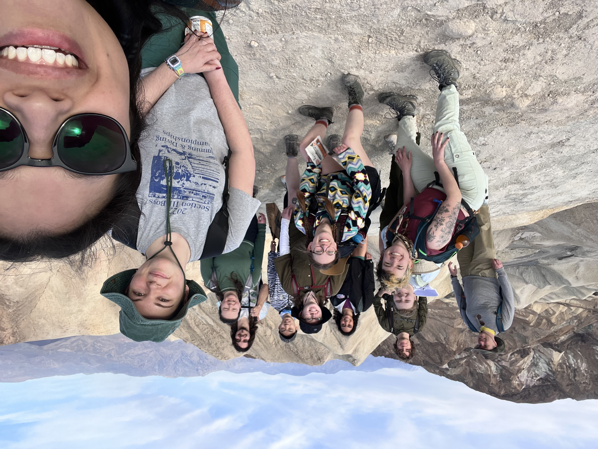
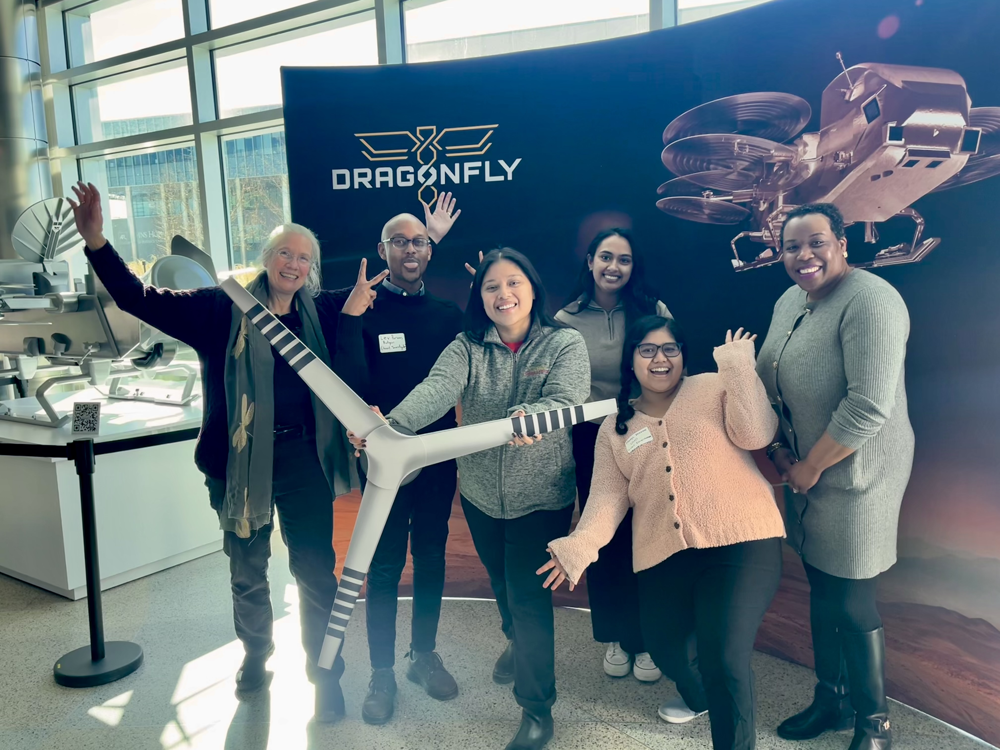
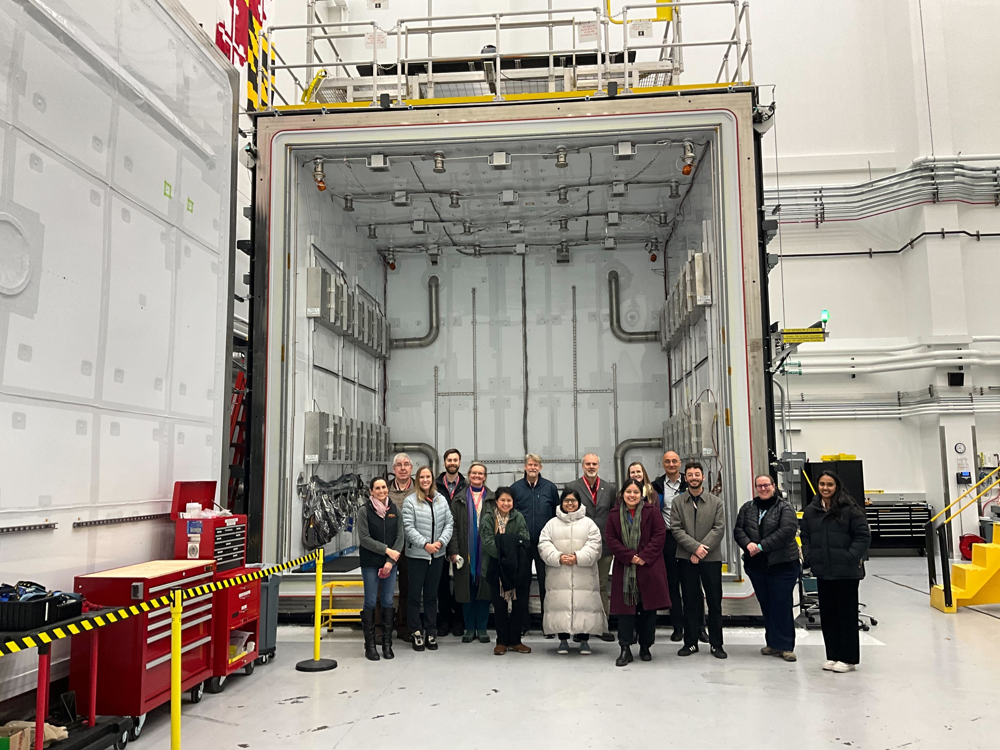
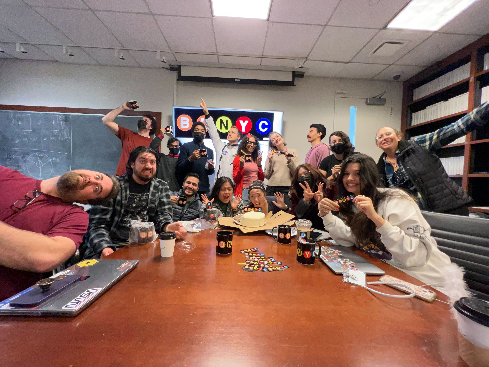
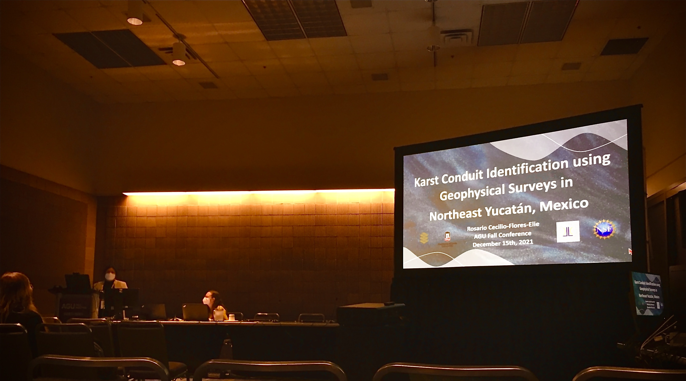
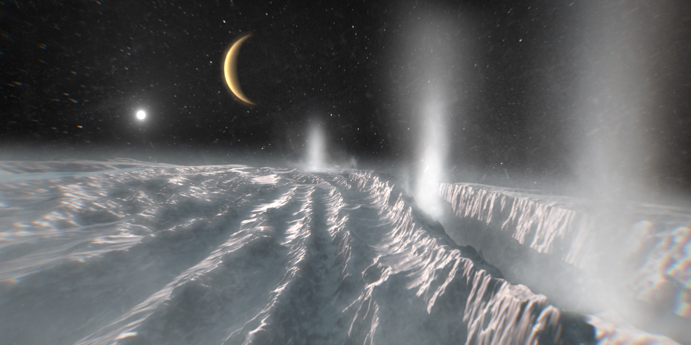
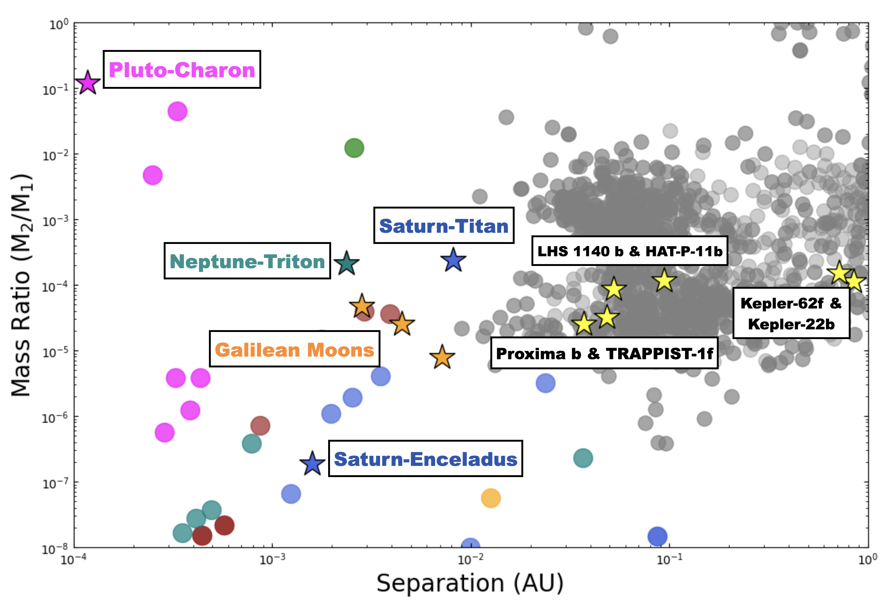
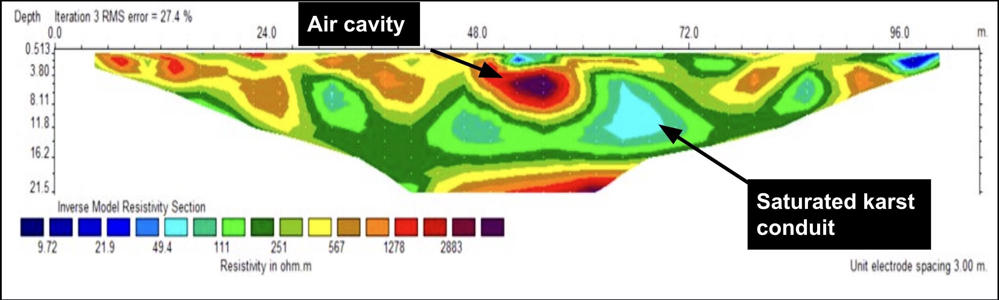
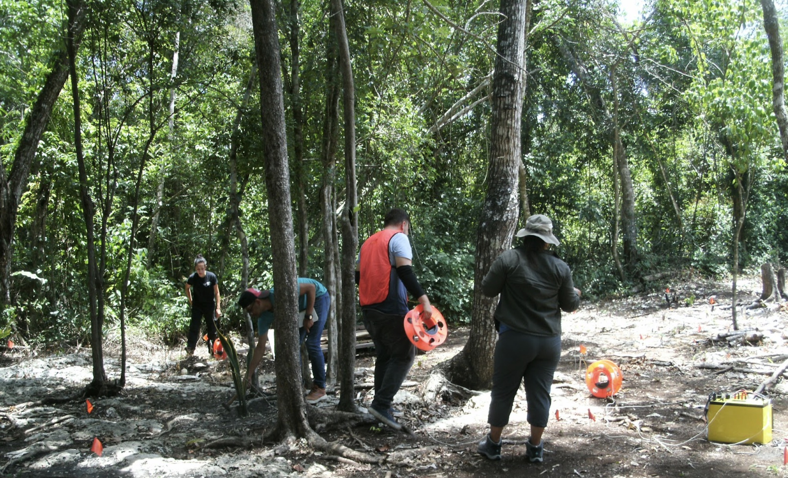

Welcome to my webpage! My name is Rosario Cecilio-Flores-Elie and I am a second-year PhD student in Geological Sciences at Cornell University and a NASA Dragonfly Guest Investigator at the Johns Hopkins Applied Physics Lab.
My research focuses on how fluids move through the subsurface through faults and fractures, and how that movement can be detected from the surface.
I use a combination of remote sensing, GIS-based spatial analysis, and geophysical fieldwork to investigate where and how fluids ascend through fractured rock.
At El Tatio Geyser Field in northern Chile, I use drone-derived orthomosaics and digital elevation models (DEMs) to map hydrothermal features,
faults, and fractures across two distinct basin environments. Through structural analysis, I identify the fault geometries and secondary structures that control where surface
expressions like geysers and hot springs appear. This observational and spatial work is building toward numerical modeling of fluid flow through fractured media.
The mechanics of fluid ascent through fractured rock have implications beyond Earth. On icy ocean worlds like Enceladus, subsurface fluids
may migrate through ice and rock and produce surface expressions detectable from spacecraft. Interpreting those signatures requires understanding the underlying mechanisms,
and that is where terrestrial fieldwork becomes useful. El Tatio serves as a physical analog: a place where we can observe, measure, and constrain the processes that may be
occurring on other planetary bodies.
General Background
I am a first-generation Mexican-American from the Bronx, NY. Before I was a planetary scientist, I spent a decade as a bilingual public school teacher in my home borough.
I came to astronomy and planetary science as an adult, through curiosity and a willingness to try something new.
As a first-generation student, navigating uncharted territory without a guide is something I know well. What carried me through was curiosity, the tenacity to push through challenges,
and mentors who believed I belonged.
That experience shapes how I think about my role in science. Diversity, equity, and inclusion in Earth and planetary sciences is not separate from the work, it is part of it. I am committed to
making sure that first-generation and underrepresented students have access to opportunity and to the kind of mentorship that made a difference for me.

(Group Photo) Mojave Desert and Death Valley Field Trip 2026Taking Field Notes of a normal fault; Mojave Desert and Death Valley Field Trip 2026

(Group Photo) Dragonfly Guest Investigators Cohort 5 and 6 with PI, Dr. Zibby Turtle and ocean world's scientist Dr. Lynnae C. Quick-Henderson

Tour of the Titan Chamber with some of the Dragonfly mission scientists and engineers

Group Photo of BDNYC; was a master student from 2022-2024, working with Dr. Jackie Faherty at the American Museum of Natural History in NYC

Oral presenter at AGU 2021, sharing my finding from the geophysical surveys conducted in Yucatan, Mexico through the NSF REU - Northern Illinois University in 2021
Research

Credit: ESA/Science Office
My research investigates the mechanics of how fluids move through the subsurface, through
faults and fractures, and how that movement produces detectable signatures at the surface. I
take an interdisciplinary approach combining remote sensing, geophysical fieldwork, and modeling
to understand the structural and mechanical controls on fluid ascent across planetary surfaces.
At El Tatio Geothermal Field in Chile, I use drone-derived imagery, structural mapping, and
statistical analysis to identify the fault characteristics and secondary structures that control
hydrothermal manifestations at the surface. This work serves as a terrestrial analog for
fracture-controlled fluid activity on icy ocean worlds, where similar mechanical principles
govern how subsurface fluids reach the surface, but the tools for observing them are limited to
remote sensing and modeling. My broader research interest is in closing that gap, using fieldwork
to build and validate the frameworks we need to interpret what we see on Enceladus and Titan.
Read more about my previous and current work by clicking the buttons below.
El Tatio Geothermal Field in northern Chile is the third-largest and highest-elevation
geyser field in the world, and the field site where I built the methodological foundation
for my planetary research. My work here focuses on how fault and fracture networks control
the spatial distribution and surface expression of hydrothermal activity.
Using drone-derived RGB and thermal infrared imagery, digital elevation models, and
structural mapping, I am identifying the fault characteristics and secondary structures that
govern where geysers, hot springs, and fumaroles manifest at the surface. Preliminary results
from statistical analysis that include fault proximity analysis and Spearman correlations
between vent temperature and structural distance show that conjugate strike-slip faults exert
a strong control on hydrothermal manifestations across the Upper and Middle Basins.
El Tatio is more than a field site. It is a physical system where I can test and constrain
the mechanical frameworks I want to apply to icy ocean worlds. The structural principles that
govern fluid ascent at El Tatio are likely at work on Enceladus and Titan, and fieldwork here
is how I build the models that let us interpret what we see there.
I am a NASA Dragonfly Guest Investigator collaborating with Dr. Emily Martin at the
Smithsonian National Air and Space Museum in Washington, D.C. My work focuses on Selk
Crater, the primary landing site for the Dragonfly rotorcraft lander on Titan, where I
will apply structural geology and geologic mapping approaches to better understand surface
processes and crater modification on Titan's surface.
Dragonfly is a NASA New Frontiers mission set to explore Titan, Saturn's largest moon
and the only moon in our solar system with a dense atmosphere and stable liquid on its
surface. Rather than water, Titan's lakes and rivers are filled with liquid methane and
ethane. Selk Crater is of particular scientific interest because impact events can bring
water ice and organic materials into contact, potentially creating transient habitable
environments. Understanding the structural and geomorphic characteristics of Selk Crater
will help constrain what Dragonfly may encounter when it arrives.
I will be using ArcGIS Pro to conduct geologic mapping of Selk Crater and its
surrounding terrain using available remote sensing data. This work begins in June 2026.
TESS light curve of CWISE J025638.42–335454.9 (M2) observed across Sectors 30
and 31. Rotation period of 0.8 days and a flare event near day 43 indicate a young,
magnetically active star.
As part of my master's thesis at the CUNY Graduate Center, working with Dr. Jackie Faherty
and the BDNYC Research Group at the American Museum of Natural History, Department of
Astrophysics, I analyzed photometric light curves from NASA's Transiting Exoplanet Survey
Satellite (TESS) to measure stellar rotation periods for members of the Carina-Near moving
group. Working with 99 targets, I applied the Lomb-Scargle periodogram method to extract
rotation periods from TESS high-cadence observations, successfully measuring periods for 10
objects and contributing age constraints for ultracool dwarf companion systems identified
through the Backyard Worlds: Planet 9 citizen science project.
This work contributed to a broader effort to characterize the rotational and magnetic
properties of young low-mass stars and their companions, with implications for stellar
evolution and planetary formation. Results were published as part of Rothermich, A.,
Faherty, J., et al. (including Cecilio-Flores-Elie, R.) (2024),
89 New Ultracool Dwarf
Co-Moving Companions Identified with the Backyard Worlds: Planet 9 Citizen Science
Project, The Astronomical Journal.
Planet-Moon Interaction

Mass ratio vs. orbital separation for Solar System moons and cold ocean world
candidates. Geologically active moons — including the Galilean moons, Titan, and Enceladus,
cluster at mass ratios between 10⁻⁸ and 10⁻⁴ and separations between 10⁻⁴ and 10⁻² AU.
Ocean world candidates such as Proxima b, TRAPPIST-1f, and Kepler-62f fall within similar
ranges, a potential correlation worth investigating as a proxy for geological activity and
habitability beyond our Solar System. Ocean world candidates from Quick et al. (2023).
The second project of my master's thesis investigated the forces driving geological activity
on moons in our solar system by analyzing the mass ratios, separation distances, and binding
energies of planet-moon systems. Inspired by the diverse surface activity observed on moons
like Io, Europa, and Enceladus, I asked whether similar orbital parameters could help identify
potentially active and habitable worlds beyond Earth. Building on the work of
Faherty
et al. (2021) and Rothermich
et al. (2024), I extended the analysis from stellar and exoplanetary companions down to
moons within our own solar system.
Results showed that geologically active moons: Io, Europa, Ganymede, Titan, and Enceladus,
cluster at mass ratios between 10⁻⁸ and 10⁻⁴ and orbital separations between 10⁻⁴ AU and 10⁻² AU, suggesting that internal
heating and geological processes concentrate within these
ranges. Notably, cold ocean world candidates such as Proxima b, TRAPPIST-1f, and LHS 1140b
fall within similar mass ratio ranges, pointing to potential correlations between orbital
dynamics and geological or atmospheric activity on these worlds.
In the summer of 2021, I conducted research in the Yucatán Peninsula as part of the NSF
REU "Water Quality
in the Yucatán Peninsula" at Northern Illinois University, working with Dr. Philip J.
Carpenter and Dr. Melissa Lenczewski.The project focused on the Yucatán Peninsula's
vast karstic aquifer system, the primary freshwater source for the region, where I used
electrical resistivity tomography with the SuperSting™ to conduct geophysical surveys near
cenotes, sinkholes formed by collapsed limestone that expose the underlying groundwater
system.
The surveys were designed to characterize subsurface water flow, assess water quality,
and evaluate potential anthropogenic impacts from tourism and regional migration. At Agua
Azul, I identified previously unmapped water-filled conduits, fracture zones, and an air
cavity, features that speak directly to the structural complexity of karst systems and how
fluids move through fractured subsurface environments.
This work was presented at the American Geophysical Union (AGU) as an oral presenter
and as a poster presenter at the NDiSTEM–SACNAS conferences in 2021 and 2022. It was also
my first hands-on experience with the kind of question that now drives my research: how do
fluids move through fractures, and what signatures do they leave behind?

Results from 2D Dipole-Dipole Survey at the Agua Azul Site, Quintana Roo, Mexico
Field team taking a break during survey operations in the Agua Azul Field Site. Far right: Co-PI Dr. Melissa Lenczewski

Conducting an azimuthal resistivity survey at Cenote Verde Lucero to map subsurface fracture orientation
I hold a New York State teaching certification in Childhood Education (Grades 1–6) with
a Bilingual Extension. Prior to pivoting to planetary geophysics, I spent nine years as a
second-grade bilingual general education teacher in the Bronx, teaching all subjects in
Spanish and English to predominantly low-income, first-generation, and immigrant families,
as well as students with disabilities. That work shaped how I explain new concepts, how I
think about equity in learning, and why creating spaces that account for different learning
styles matters.
During my tenure, I developed culturally responsive curricula that drew on students' urban
lived experiences and integrated cross-disciplinary content, using scaffolded instruction to
support multilingual learners and students with diverse learning needs. I also mentored one
to two student-teachers annually, supporting their professional development through hands-on
guidance and pedagogical coaching.
I currently teach the lab section for Earth Systems 2250 at Cornell
University. The skills I built in the classroom, breaking down complex
ideas, meeting students where they are, and creating space for curiosity, are the same
ones I bring into every scientific space I am in.
In June 2023, I participated in CUNYs Science Communication Symposium, where I presented on the active
moon Enceladus and what its hydrothermal activity tells us about the search for life beyond
Earth. You can view the presentation here. I received the Best Public Facing Translation award for
effectively communicating complex scientific ideas to a general audience.
Since September 2024, I have been a volunteer with Letters to a Pre-Scientist, a pen pal program that connects STEM
professionals with middle school students in low-income schools through
handwritten letters. It is one of the most direct ways I can share my work and inspire
students who may not yet see themselves in science.
Other Talks:
Open-Space Hayden Planetarium Space Show - Hunter High School Field Trip (Co-ran)